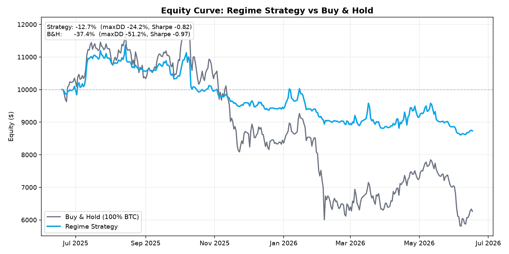
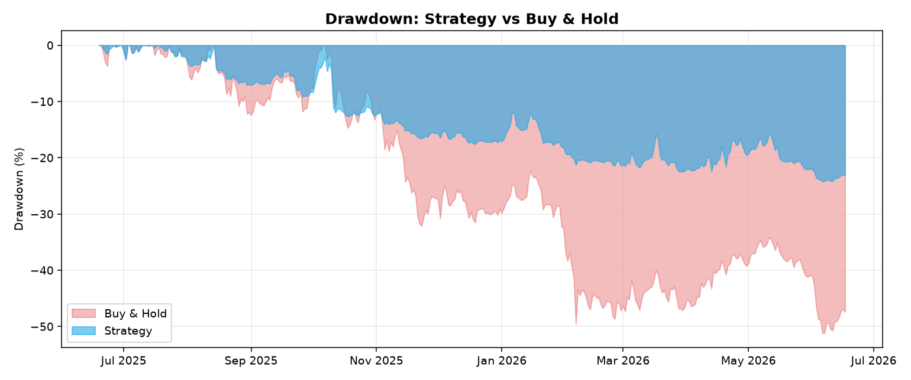
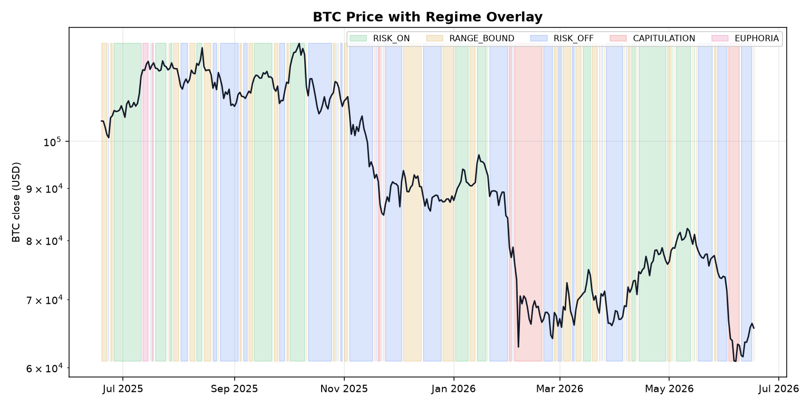
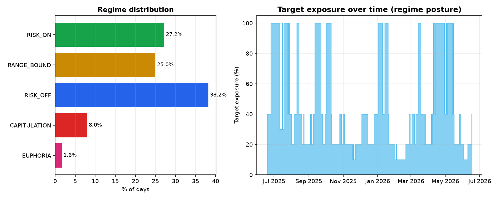

BNB AI Trading · Track 2 · CMC Agent Hub MCP Skill
📊 Market Regime Oracle
A 5-signal → 5-state BTC market-regime classifier with posture mapping — fuses momentum, sentiment, volatility, funding & flow into one explainable regime, backtested vs buy-and-hold.
In a down year for BTC (−37.4%), the regime strategy did −12.7% —
halving drawdown (−24.2% vs −51.2%) and halving volatility (19.3% vs 43.1%),
outperforming buy-and-hold by ~25 points while still going long in uptrends.
Excess Return
+24.7 pp
vs buy & hold
Strategy Return
−12.7%
vs −37.4% B&H
Max Drawdown
−24.2%
vs −51.2% B&H
Volatility
19.3%
vs 43.1% B&H
🟡 Regime Strategy
Total return−12.7%
Max drawdown−24.2%
Annualized volatility19.3%
Sharpe (rf 4%)−0.82
Sortino−1.01
Final equity ($10k start)$8,733
⚫ Buy & Hold
Total return−37.4%
Max drawdown−51.2%
Annualized volatility43.1%
Sharpe (rf 4%)−0.97
Sortino−1.32
Final equity ($10k start)$6,264
Visual Results
Generated by python main.py — CoinGecko BTC daily, 2025-06-19 → 2026-06-17 (364 days).

Equity Curve — Regime Strategy vs Buy & Hold

Drawdown — Strategy Stays Shallower Through the Whole Cycle

BTC Price with Regime Overlay (color-coded by state)

Regime Distribution & Target Exposure
The 5 Regimes & Posture Mapping
Ask "what kind of market is this, and how much risk should I take?" — the oracle answers with one regime + a documented posture. Deterministic, no look-ahead.
| Regime | Target Exposure | Posture | Days (12m) |
|---|
| RISK_ON | 100% | Uptrend — full exposure, accumulate | 99 |
| RANGE_BOUND | 40% | Sideways — light exposure, hold core | 91 |
| RISK_OFF | 20% | Downtrend — defensive, raise cash to 80% | 139 |
| CAPITULATION | 10% | Panic sell-off — max defensive, wait for stabilization | 29 |
| EUPHORIA | 30% | Blow-off top — take profit, fade strength | 6 |